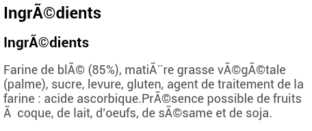
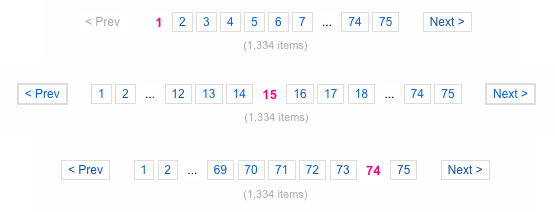
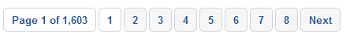

Serverside Webscripting [JLW323]
06.silex.part4
UTF-8 and Doctrine

UTF-8
-
Again⚑: Use
UTF-8, everywhere.-
DB Schema and Tables: use
utf8_general_ciCREATE DATABASE `mydb` DEFAULT CHARACTER SET utf8 DEFAULT COLLATE utf8_general_ci;CREATE TABLE IF NOT EXISTS `records` ( `id` INT(10) NOT NULL AUTO_INCREMENT, `name` VARCHAR(255) NOT NULL, PRIMARY KEY (`id`) ) ENGINE = InnoDB DEFAULT CHARACTER SET utf8 DEFAULT COLLATE utf8_general_ci; -
DB Connection
$db = new PDO('mysql:host=' . DB_HOST .';dbname=' . DB_NAME_FF . ';charset=utf8', DB_USER, DB_PASS); -
HTML charset
<meta charset="utf-8" />
-
DB Schema and Tables: use
UTF-8 and Doctrine
-
Setting the `charset` to `utf8` not enough.
- One also needs to invoke a preflight `SET NAMES utf8` query to change the way statements are sent to the server.
-
PDO offers a way to execute a preflight query when connecting to the MySQL server:
- When constructing the connection, pass in the query via the driver options, using the `PDO::MYSQL_ATTR_INIT_COMMAND` constant.
UTF-8 and Doctrine: Code
<?php
$app->register(new Silex\Provider\DoctrineServiceProvider(), array(
'db.options' => array(
'driver' => 'pdo_mysql',
'dbname' => $app['config']['db']['dbname'],
'user' => $app['config']['db']['user'],
'password' => $app['config']['db']['password'],
'host' => $app['config']['db']['host'],
'charset' => 'utf8',
'driverOptions' => array(
1002 => 'SET NAMES utf8'
)
)
));Pagination
Pagination?
-
When having too many items to show, split them into several pages
- e.g. search results, filter results
- Typically placed beneath the results
Examples
-
Good example:

- Always indicate how many results there are
- Always indicate how many pages there are
-
Show a reasonable number of pages
- The number row automgically adjusts itself based on the current page
- First two and last two pages always shown
- All, except the current page, clickable
-
Always indicate current active page
- Don't link it though!
-
Always show next/previous buttons
- Only clickable when necessary
- Don't show First/Last links (no direct value)
-
Bad examples:


Howto: Needed parameters
-
From database: Total number of items
$numItems = $db->fetchColumn('SELECT COUNT(*) FROM table'); -
From configuration: Number of items to show per page
$numItemsPerPage = 10; -
From url: current page (default = 1)
$curPage = max(1, (int) $request->query->get('p')); -
To calculate: number of pages
$numPages = ceil($numItems / $numItemsPerPage);
Howto: Selecting subset of items
-
Pass
$curPageand$numitemsPerPageto your repository and add it use it in aLIMITclausepublic function findAll($curPage = 1, $numItemsPerPage = 10) { return $this->db->fetchAll(' SELECT * FROM datasets ORDER BY id DESC LIMIT ' . (int) (($curPage - 1) * $numItemsPerPage) . ',' . (int) ($numItemsPerPage) ); }
Howto: Parameters for Rendering
-
The current page and number of items
$curPage; // To indicate the active page $numItems; // To indicate the number of items -
The current URL
$baseUrl = 'http://example.dev/news/'; // to prepend to the pagination params -
An array with all numbers to show on screen, eg:
$pagination = array(1,2,'...',6,7,8,9,10); // Subset of pages to show- Here, #lmgtfy ;-)
Howto: Rendering (Twig)
{% set prevPage = curPage - 1 %}
{% set nextPage = curPage + 1 %}
{% if numPages > 1 %}
<div class="pagination pagination-small pagination-centered">
<ul class="clearfix">
{% if curPage > 1 %}
<li class="previousPage"><a href="{{ baseUrl }}?p={{ prevPage }}" data-p="{{ prevPage }}">< Previous</a></li>
{% else %}
<li class="previousPage disabled"><span>< Previous</span></li>
{% endif %}
{% for page in pagination %}
<li {% if page == curPage %} class="active"{% endif %}{% if page == '...' %} class="disabled"{% endif %}>
{% if page == curPage %}
<span>{{ page }}</span>
{% elseif page == '...' %}
<span>…</span>
{% else %}
<a href="{{ baseUrl }}?p={{ page }}" data-p="{{ page }}">{{ page }}</a>
{% endif %}
</li>
{% endfor %}
{% if curPage < numPages %}
<li class="nextPage"><a href="{{ baseUrl }}?p={{ nextPage }}" data-p="{{ nextPage }}">Next ></a></li>
{% else %}
<li class="nextPage disabled"><span>Next ></span></li>
{% endif %}
</ul>
<p class="text-center">
{{ numItems }} items
</p>
</div>
{% endif %}And now?
-
If you're really smart, create a reusable component (PHP class + template) from it and then assign the rendered HTML into your page template
<?php // Get pagination params $numItemsPerPage = 10; $curPage = max(1, (int) $request->query->get('p')); $numPages = ceil($app['datasets']->numDatasets() / $numItemsPerPage); // Get datasets (for current page) $datasets = $app['datasets']->findAll( $curPage, $numItemsPerPage ); // Build pagination $pagination = new \Taku\Pagination\Pagination( $app['url_generator']->generate('datasets.overview'), // = baseUrl $curPage, $numPages ); // Render our template return $app['twig']->render('datasets/overview.twig', array( 'datasets' => $datasets, 'pagination' => $pagination->getHtml() ));
Filtering

...